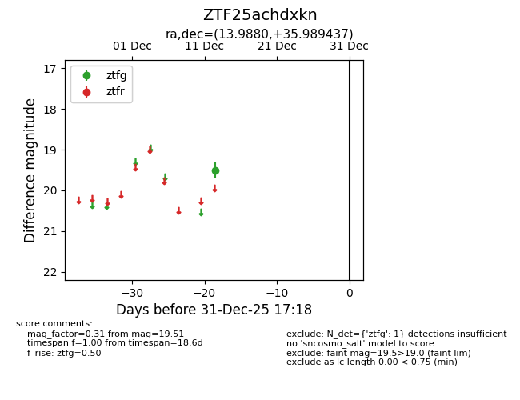
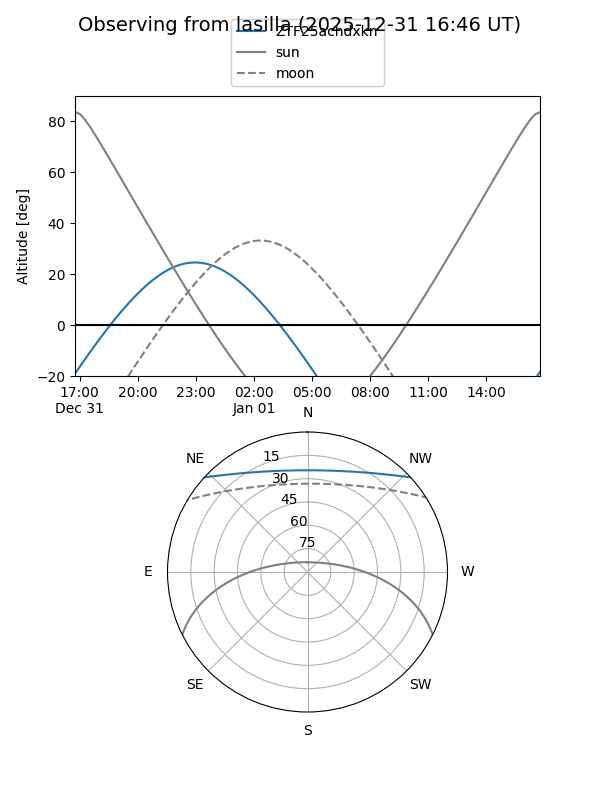
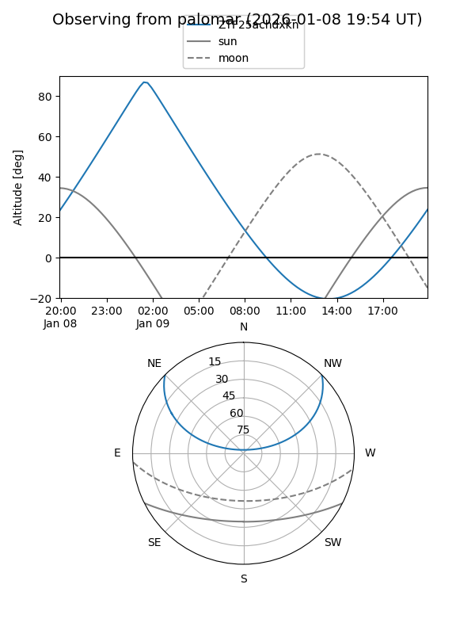

ZTF25achdxkn
Target ZTF25achdxkn at 2025-12-31 16:59
Aliases and brokers:
FINK:
Lasair:
ALeRCE:
alt names
ZTF25achdxkn (ztf,fink_ztf)
Coordinates:
equatorial (ra, dec) = 13.9880,+35.98944
equatorial (HMS+DMS) = 00:55:57.12,+35:59:21.97
galactic (l, b) = (123.9556,-26.87334)
Flags:
Photometry:
last ztfg=19.51
1 ztfg detections
Lightcurve

Visibility


Additional plots